工作流-请假申请
简介：
工作流请假流程的简单示例。
使用说明：
设计流程
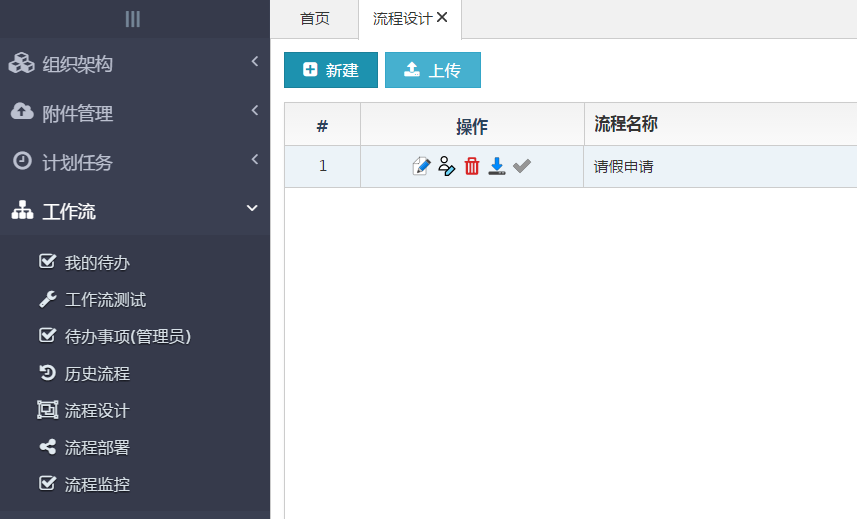
1.创建工作流
以请假申请为例：首先创建请假申请的工作流定义，下载以下附件。
选择下载的工作流文件，导入工作流
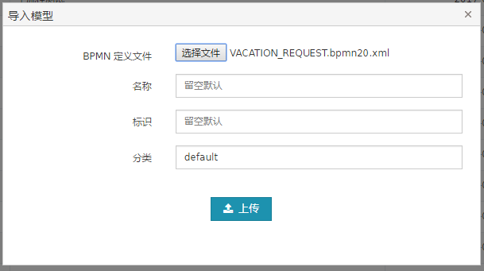
打开编辑按钮查看此流程。
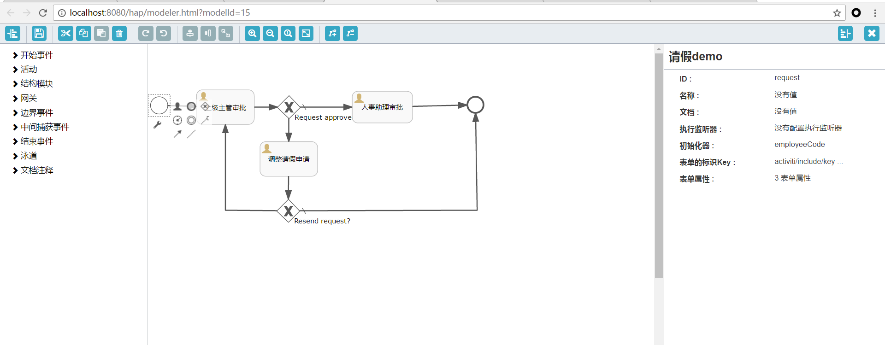
流程定义注意事项：
节点表单的标识key属性对应业务单据的展示页面（vacation_view.html_）
开始节点的表单标识key属性为流程的单据页面（在流程监控页面查看）
发布流程后可在流程部署页面查看
创建相对应业务单据表（act_demo_vacation）
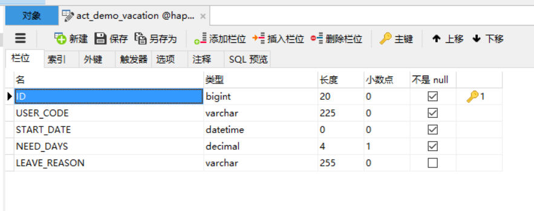
通过代码生成器生成对应Mapper(http:\/\/localhost:8080\/hap\/generator\/generator.html\
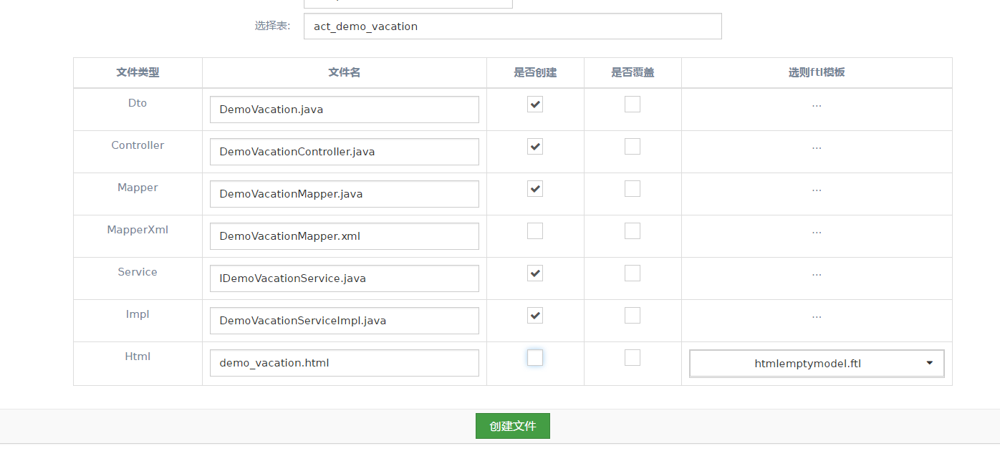
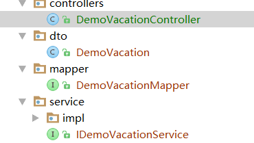
创建一个请假流程
1.DemoVacationServiceImpl类
@Service
@Transactional
public class DemoVacationServiceImpl extends BaseServiceImpl<DemoVacation> implements IDemoVacationService{
@Autowired
private IActivitiService activitiService; //工作流相关Service
@Autowired
private DemoVacationMapper demoVacationMapper;
private final String processDefinitionKey="VACATION_REQUEST"; 流程标识，通过其启动流程
// @Autowired
// private IDemoVacationService vacationService;
/*
* 创建请假流程 将业务表单存放在act_demo_vacation 表将此表单通过businessKey与流程相关。启动此流程
* DemoVacation为业务表单数据。可根据流程需要将表单数据加入流程变量中，如我们在请假流程审批过程中我们可能
* 需要请假时间参数对流程逻辑做出相关处理，则可以把其放入流程变量中。
* */
@Override
public void createVacationInstance(IRequest iRequest, DemoVacation demoVacation) {
demoVacation.setUserCode(iRequest.getEmployeeCode());
DemoVacation demo = this.insertSelective(iRequest, demoVacation);
ProcessInstanceCreateRequest instanceCreateRequest = new ProcessInstanceCreateRequest();
instanceCreateRequest.setBusinessKey(String.valueOf(demo.getId()));
instanceCreateRequest.setProcessDefinitionKey(processDefinitionKey);
//添加流程变量
List<RestVariable> variables = new ArrayList<>();
RestVariable variable = new RestVariable();
variable.setName("needDays");
variable.setType("long");
variable.setValue(demo.getNeedDays());
variables.add(variable);
instanceCreateRequest.setVariables(variables);
activitiService.startProcess(iRequest, instanceCreateRequest);
}
/*
* 查看历史请假记录(查询单据表）
* c*/
@Override
public List<DemoVacation> selectVacationHistory(IRequest iRequest) {
DemoVacation demoVacation=new DemoVacation();
demoVacation.setUserCode(iRequest.getEmployeeCode());
List<DemoVacation> demoVacations= demoVacationMapper.select(demoVacation);
return demoVacations;
}
}
DemoVacationController
@Controller
public class DemoVacationController extends BaseController {
@Autowired
private IDemoVacationService vacationService;
/*
* 请假流程demo
* */
@RequestMapping(value = "/wfl/runtime/process-instances/vacation", method = RequestMethod.POST, produces = "application/json")
@ResponseBody
public ResponseData createVacationProcessInstance(@RequestBody DemoVacation demoVacation,
HttpServletRequest httpRequest, HttpServletResponse response) {
IRequest iRequest = createRequestContext(httpRequest);
vacationService.createVacationInstance(iRequest, demoVacation);
return new ResponseData();
}
/*
请假流程通过businessKey获取流程表单
* */
@RequestMapping("/wfl/history/form/details/vacation/{businessKey}")
@ResponseBody
public DemoVacation getProcessFrom(HttpServletRequest request, @PathVariable String businessKey) {
DemoVacation demoVacation = new DemoVacation();
demoVacation.setId(Long.parseLong(businessKey));
DemoVacation demo = vacationService.selectByPrimaryKey(createRequestContext(request), demoVacation);
return demo;
}
/*
* 获取当前用户历史请假记录
* */
@ResponseBody
@RequestMapping("/wfl/vacation/query")
public ResponseData getVacationHistory(HttpServletRequest request, HttpServletResponse response, DemoVacation demoVacation, @RequestParam(defaultValue = DEFAULT_PAGE) int page,
@RequestParam(defaultValue = DEFAULT_PAGE_SIZE) int pagesize) {
IRequest iRequest = createRequestContext(request);
List<DemoVacation> lists = vacationService.selectVacationHistory(iRequest);
return new ResponseData(lists);
}
}
1.展示页面
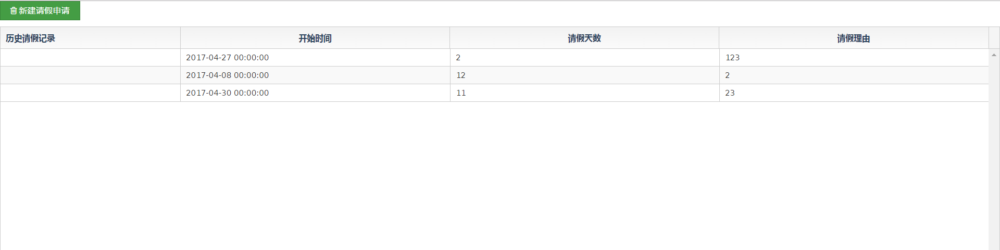
2.发布流程：提交申请页面,表单属性与具体业务表对应。
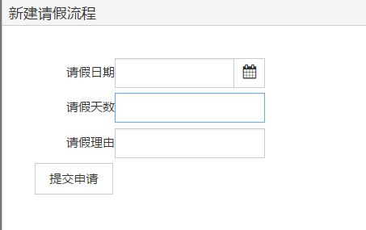
3.提交之后通过调用DemoVcationServiceImpl.createVacationInstance方法启动流程
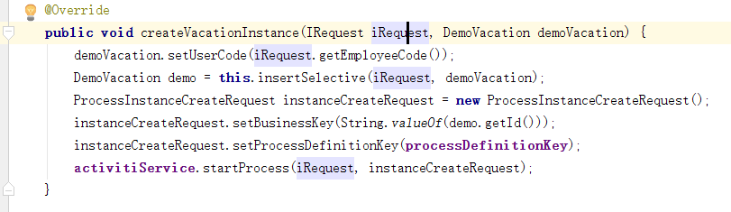
4.将对应表单数据写入业务表，获取其id当做流程businissKey并通过procssDefinitonKey启动该流程。
获取表单信息：
在运行到对应节点会通过表单key加载相应页面并传入businesskey，在页面可通过此参数查询业务单据。
（vacation_view.html）
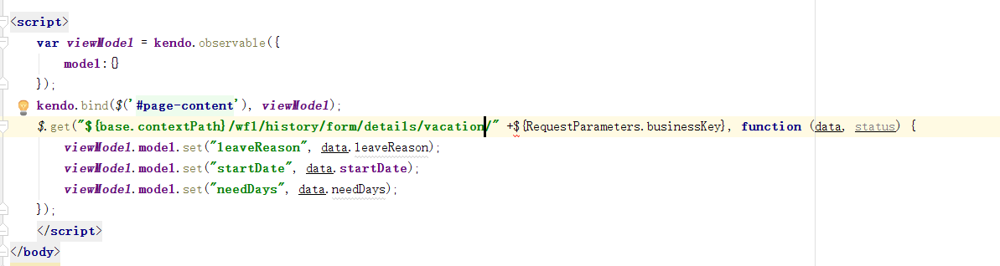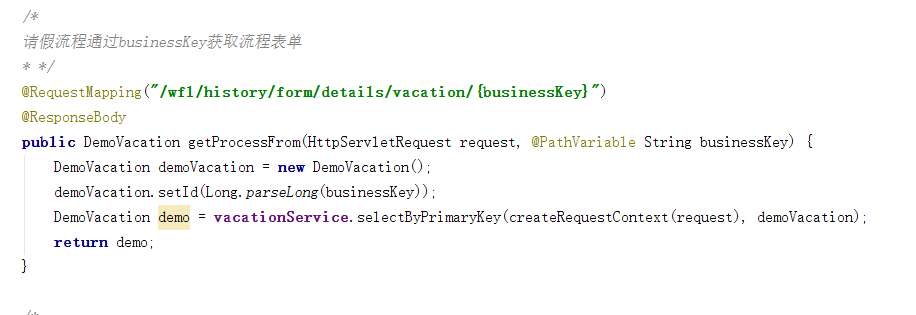
审批页面或者监控页面可查看对应的表单数据。
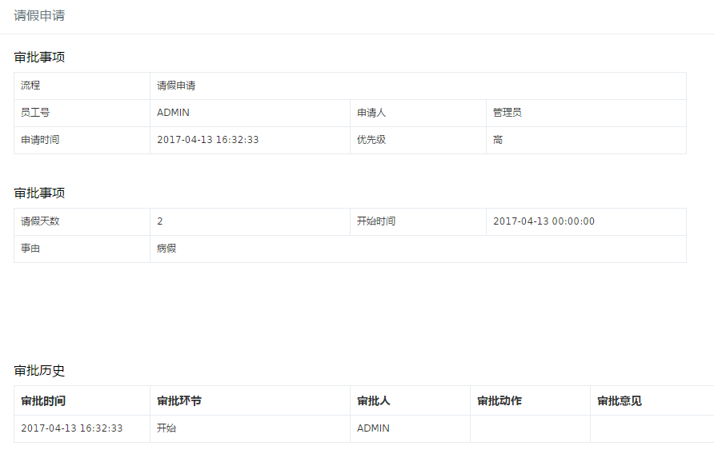
保存流程变量：
在表单页面，通过getFormProperties()函数返回需要保存的流程变量
将必要的业务数据通过getFormProperties以json对象返回，HAP将会自动将数据保存到流程变量里，便于控制流程
var viewModel = kendo.observable({
//...
function getFormProperties() {
return viewModel.model.toJSON()
}
保存表单数据
在表单页面，通过回调函数executeWorkFlowTask实现业务数据的保存
var executeWorkFlowTask = function(actionCallBack,p){
$.ajax({
url: "${base.contextPath}/wfl/vacation/save",
type: "POST",
dataType: "json",
contentType: "application/json",
data: kendo.stringify(viewModel.model),
success: function (args) {
actionCallBack.call(window.parent,p);
}
});
}
注意更新完业务数据以后，调用回调函数actionCallBack来完成审批动作。
参数p 包含这次的审批动作(action)